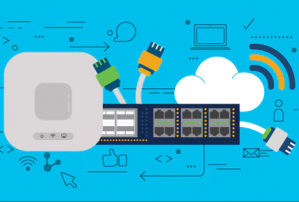

Una red de computadoras (también llamada red de ordenadores o red informática) es un conjunto de equipos nodos y software conectados entre sí pormedio de dispositivos físicos oinalámbricos que envían y reciben impulsos eléctricos, ondas electromagnéticas o cualquier otro mediopara el transporte de datos, con la finalidad de compartir información, recursos y ofrecer servicios.
Etimologia
La palabra red viene del latín rete, retis,(malla de hilo para pescar). En informáticaes el calco del inglés net (malla), parareferirse a los cables, alambres y otrosconductos que sirven para lacomunicación electrónica entreordenadores.
historia
El primer indicio de redes de comunicación fue de tecnología telefónica y telegráfica. En 1940 se transmitierondatos desde la Universidad de Darmouth, en Nuevo Hampshire, a Nueva York. A finales de la década de 1960 y en los posteriores 70 fueron creados los miniordenadores. En 1976, Appleintroduce el Apple I, uno de los primerosordenadores personales.
Descripción básica
La comunicación por medio de una red selleva a cabo en dos diferentes categorías: la capa física y la capa lógica.
elementos de la red
Para poder formar una red se requieren elementos: hardware, software y protocolos. Los elementos físicos se clasifican en dos grandes grupos: dispositivos de usuario final (hosts) y dispositivos de red. Los dispositivos deusuario final incluyen los computadores, impresoras, escáneres, y demás elementos que brindan servicios directamente al usuario, y los segundos Componentes básicos de las redes son todos aquellos que conectan entre sí a los dispositivos de usuario final, posibilitando su intercomunicación.
proposito de la red
El fin de una red es interconectar los componentes hardware de una red , y por tanto, principalmente, los ordenadores individuales, también denominados hosts, a los equipos que ponen los servicios en la red, los servidores, utilizando el cableado (o tecnología inalámbrica) soportada por la electrónica de red y unidos por cableado (o radiofrecuencia)
hardware

Para lograr el enlace entre los ordenadores y los medios de transmisión (cables de red o medios físicos para redes alámbricas e infrarrojos o radiofrecuencias para redes... inalámbricas), es necesaria la intervenciónde una tarjeta de red (NIC, Networkinterface controller), con la cual se puedanenviar y recibir paquetes de datos desde y hacia otros ordenadores, empleando unprotocolo para su comunicación y convirtiendo a esos datos a un formatoque pueda ser transmitido por el medio (bits, -ceros y unos-).
SO de red

Permite la interconexión de ordenadores para acceder a los servicios y recursos. Al igual que un equipo no puede trabajar sin un sistema operativo, una red de equipos no puede funcionar sin un sistema operativo de red. En muchos casos el sistema operativo de red esparte del sistema operativo de los servidores y de los clientes